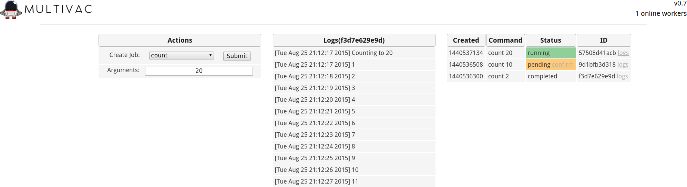

Documentation
This describes the various components of Multivac. You can use the Quickstart to deploy Multivac.
Multivac has four main components:
- Worker: Executes commands, keeping track of their state and retaining command output
- API: Provides the WebUI as well as a RESTful interface for extending Multivac
- Slackbot: Listens for commands issued via Slack, submitting jobs and streaming output back to the user
- Redis: used for communication between components, job tracking, and log retention

WebUI
The web interface provides a real-time view into jobs and their respective logs. It also provides a method of creating jobs outside of your chat service